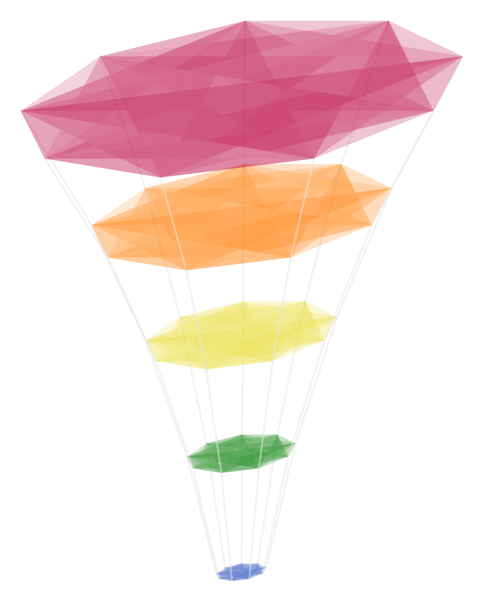

Phd Thesis
A copy of my PhD thesis in the state it has been submitted. This will be updated once complete.
This thesis includes a new construction of groups of type FP that uniquely uses graphical small cancellation theory to control the topology of the relevant objects. We further show that we are able to construct uncountably many quasi-isometry classes of such groups in this way and go on to prove various properties of these groups.
